A quiet WebXR world of islands, ocean and sky, for the Quest browser. Walk a beach through a whole day and night, swim, sail, fly up until the world is a small round planet below you. The entire game is one HTML file.
You start on a sand beach at the edge of a small island. There is nothing to win. You can walk, run, jump onto rocks, swim, climb into a boat, light a fire, draw in the sand with a stick, launch fireworks, fly a drone, and, if you want to, point a controller at the sky and fly away from the island entirely: past the clouds, past the point where the sky turns black, until your world is a small planet with a sun, a moon and a few neighbours.
Nothing is loaded from a file. The sky, the waves, the sand, the trees, the rocks, the buildings, the music of the wind and the sound of the engine are all generated by code when the page opens. That is why a world this size fits in a single file you can host anywhere with https and open in the Quest browser.
1 fileindex.html, with three.js from a CDN. No assets, no build step.
8 minfor a full day and night. Time and weather are yours to change.
4,500+islands and sea features spread over a round planet 166 km in circumference, always the same ones for a given seed.
1 → 7.0versions, each one a conversation turn.
The beach, the day, the night
Where it started, and still where you begin.
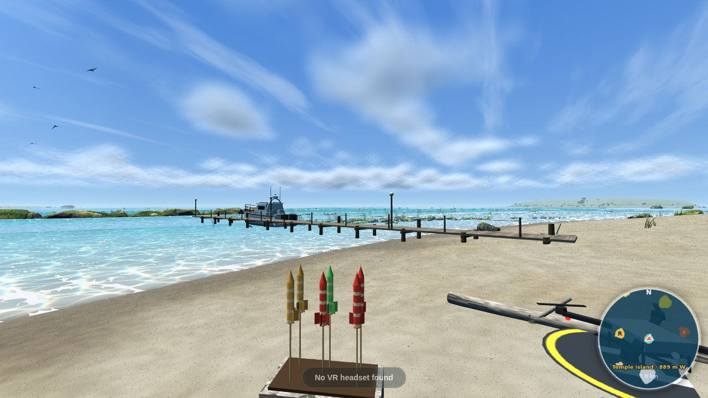
Midday. Gerstner swell, breaking waves, foam that runs up the sand and back, caustics in the shallows, a volumetric sky with clouds you can see the shapes of.Sunset. Gold to orange to peach, with the reds and purples kept low so it reads as a real evening. God rays come through gaps in the cloud.
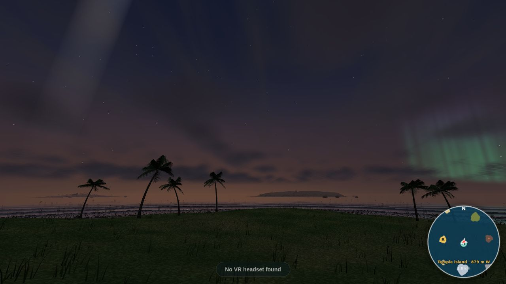
The lighthouse. A textured tower on a rock-ringed hill, with a cone-shaped beam that fades out and sweeps round at night.
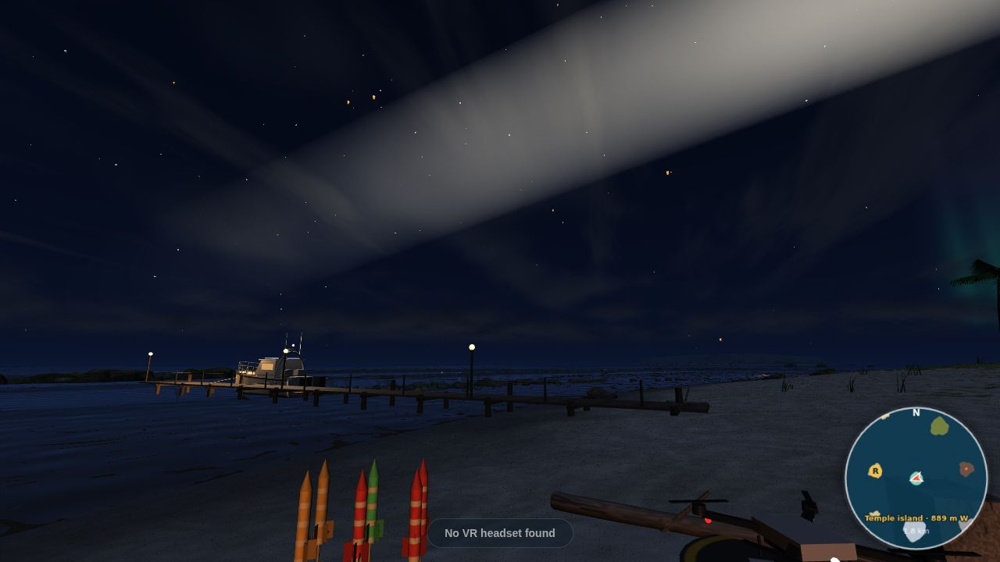
Festival lanterns. Chinese lanterns rise into the sky, lotus lanterns drift on the water, and red ones hang on bamboo along the beach. They are off by default; turn them on in the menu.
Sand that remembers you
Your footsteps are stamped into a texture that wraps around you, and the sand shader reads it as hollows: damp, packed sand at the bottom, a lip around the edge. A stick lies on the beach so you can draw. The tide, the rain and time slowly smooth it all away again.
A fire for the night
The campfire is a real light source for the sand, the water and nearby lamps. Rockets can be lit from it.
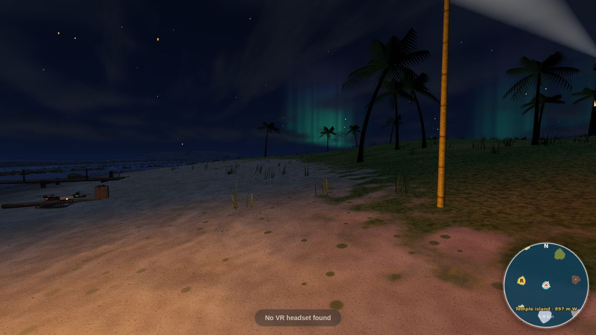
The campfire on the south beach, with its stones and logs.
The sea, under and over
Borrowed from your Coastline project and extended.
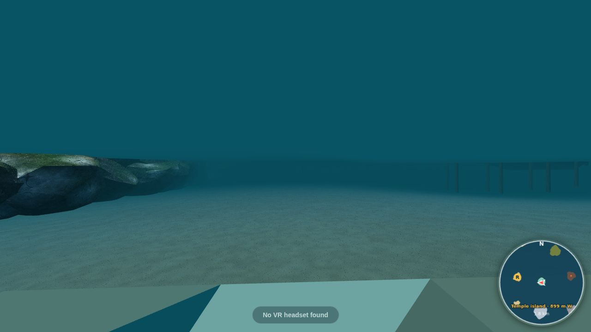
Swimming. Wade out and you float with your eyes just above the surface, riding the waves. Hold the triggers and sweep your arms to push yourself along. Dive and the world turns to teal murk, with a bright window to the sky above and muffled sound.
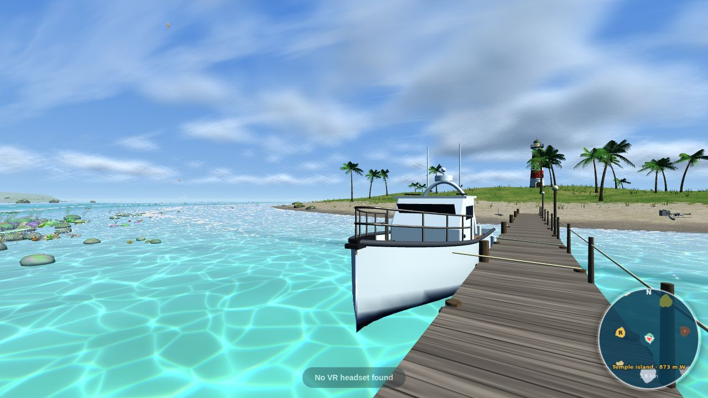
The dock and the boat. A timber pier in a sheltered, dredged basin behind a breakwater. Press Y to take the helm anywhere at sea, and again to step away. The menu can send it home to the dock.
The reef (seven kinds of coral), kelp forests, fish schools and leaping fish all come from Coastline and now follow you to whichever island you are at. So do the gulls, which circle where the fish are jumping and dive.
The wider world
Islands that appear as you travel, and are the same every time.
The world is a grid of cells. Each cell is hashed together with a world seed to decide whether it holds an island, what kind, how big, and where. An island's height is a single formula written twice, once in JavaScript for walking and building the land, and once in GLSL for the water, so the waves break exactly where the shore is. Nothing needs to be loaded to know where an island is; the land is built a little at a time as you approach, out in the haze where you cannot see it happen.
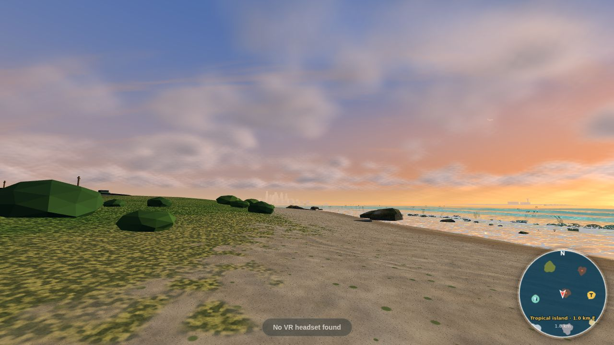
Volcano. Smoke, lava flows down the slopes, a red glow in the dark.
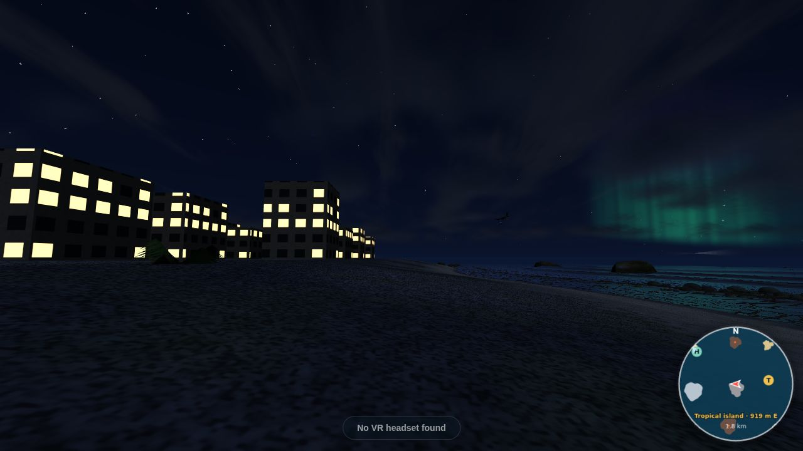
City island. A street grid, towers that rise toward the middle, lit windows you can see from far out to sea.
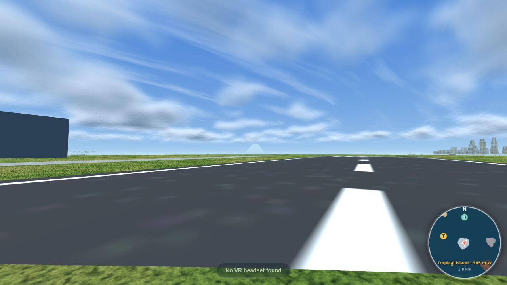
Airport. Runway, tower, hangar and terminal, with planes landing and taking off on a loop.
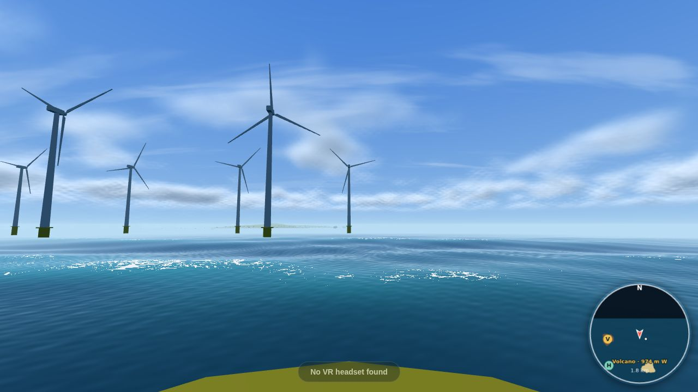
Wind farm. Turbines turn into the wind. There is also an oil rig you can stand on, ships, and airliners overhead.
Other islands are tropical (forests, rivers, farm fields, sea cliffs), temple islands with stepped terraces, and swamps with mangroves. Some have a coast road with power lines, guard rails and cars, built the way Coastline builds its roads: resting on top of the land, bridging dips.
Places worth finding
Hand-made, set into the generated land.
On top of the generated islands sit a few authored places. Each is placed by rules (flat enough, near water or deep in forest, away from the others), the ground is levelled and blended under it, trees keep clear, and a dirt path leads to it. What you do there is remembered between visits.
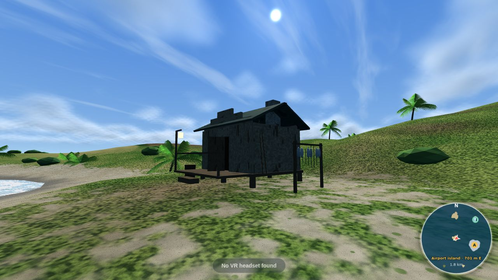
Fishing cabin. A weathered hut with a porch lantern you can light, a drying rack, a pier and a dinghy.
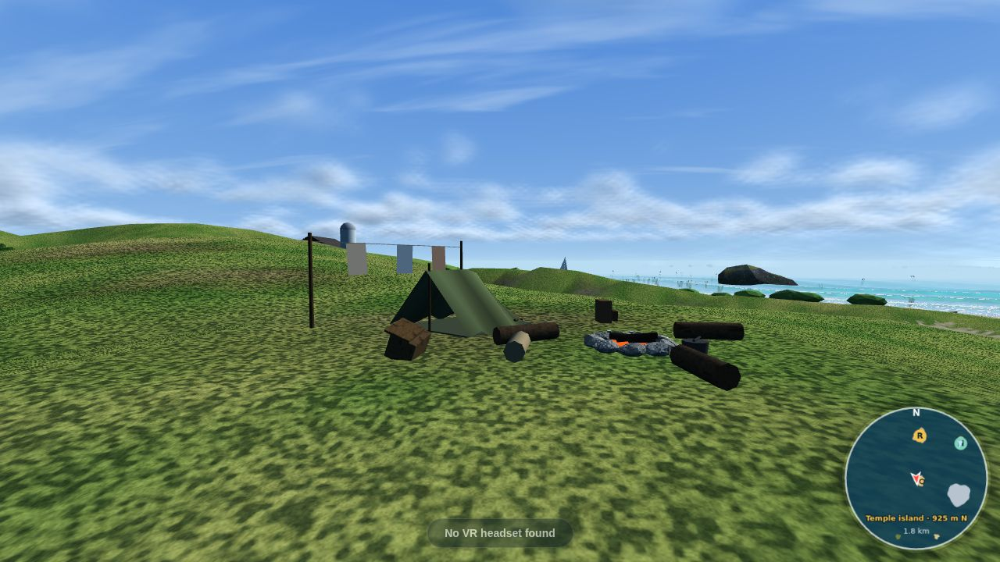
Abandoned campsite. A collapsed tent, a cold fire ring to relight, log seats, and a diary.
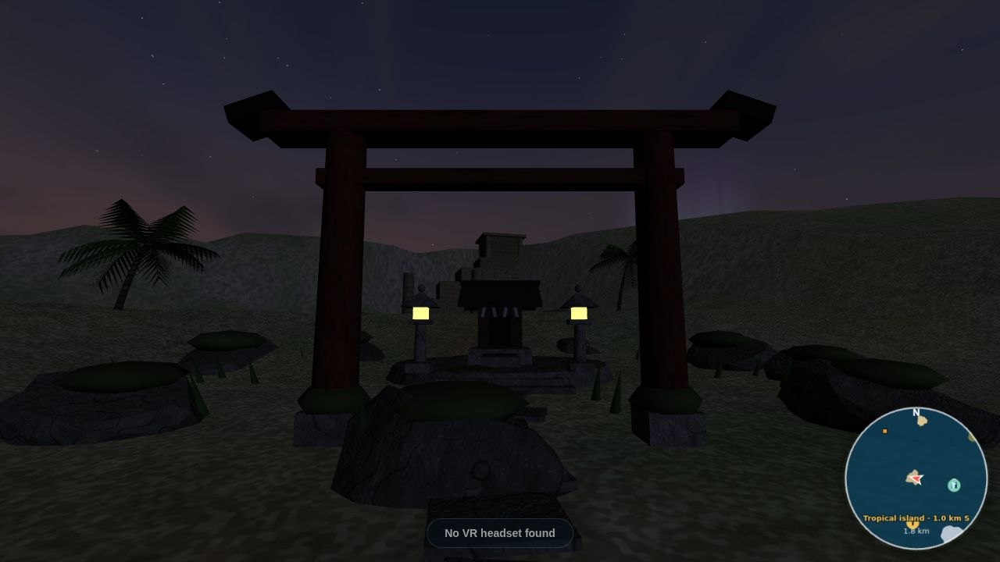
Forest shrine. A gate, stone lanterns and a mossy shrine in a clearing. Make an offering and the lanterns wake and fireflies appear.
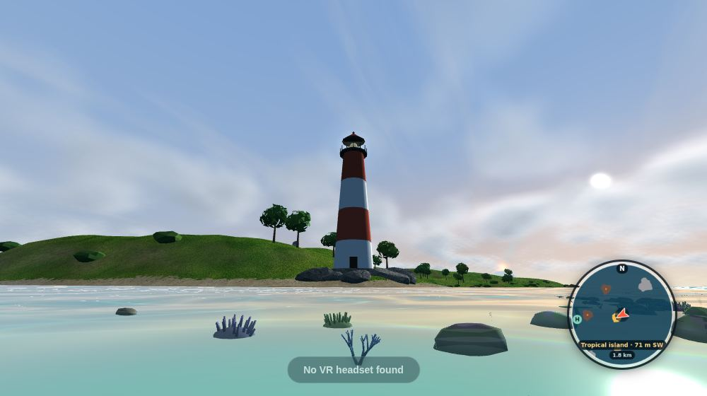
Lighthouse. A banded tower on the rocks, with a beam that sweeps at night and a keeper's log to read.
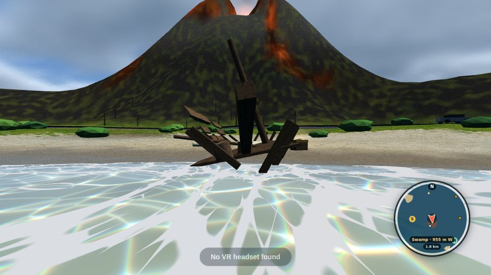
Shipwreck. Ribs, planks and a snapped mast half sunk where the sand meets the sea, with a chest and a log to search.
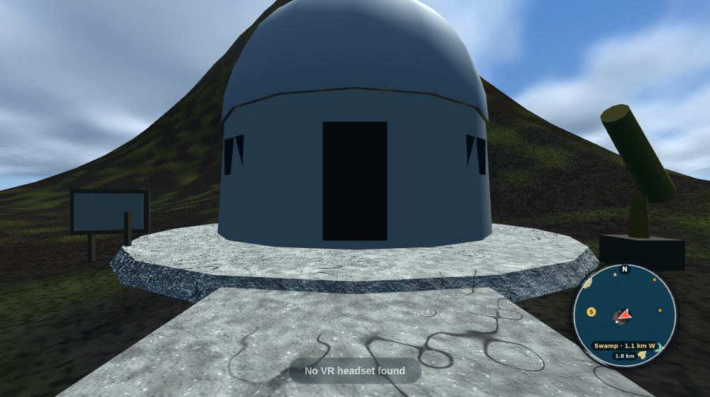
Observatory. A dome on a stone terrace, a telescope to look through and a star chart with one constellation circled.
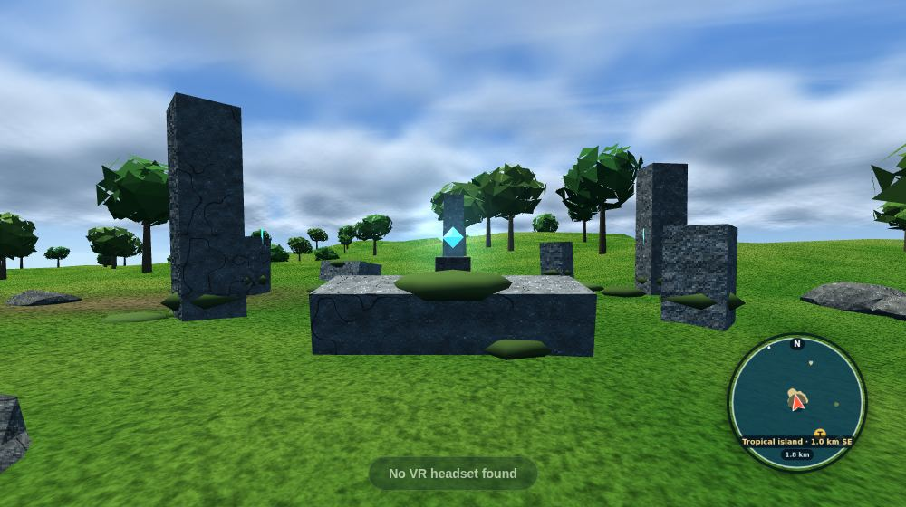
Hidden ruins. A ring of standing stones in the woods around a rune stone that wakes when you touch it.
The first time you come near one, the game tells you what you found and how many places you have found so far. Each has a "Nearest:" entry in the teleport menu, and a mark on the minimap.
A real planet
Since 7.0 the world is a sphere, and you ride on it.
The planet is a cube-sphere: six square faces, each 32 by 32 cells, wrapped into a globe about 26.5 km in radius. Each face is a flat map in metres, so the walking, swimming and building code you already had keeps working on it, and the planet itself is a true sphere. Walk or fly off the edge of one face and you are carried onto the next, with your heading, your speed and your boat turned to match. Every face is ringed by a band of open sea, so the join is never in view of land. You can circle the planet and come back to where you started.
The curve of the world is the sphere's own curve and no longer changes as you climb. The horizon is a few hundred metres away at the beach, islands rise over it as you approach, and from a few kilometres up you see the real globe: islands with their shallows, clouds and their shadows, a thin atmosphere glowing blue and orange at the terminator.
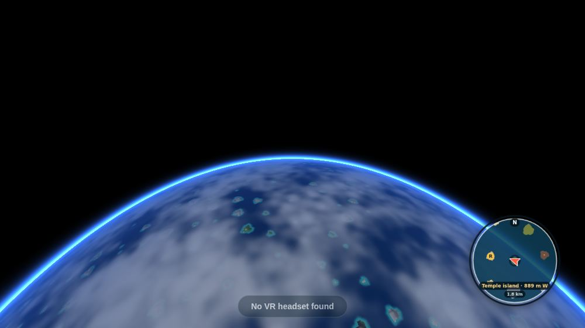
From 9 km up. Islands with their shallows on a round sea, under the atmosphere's rim.
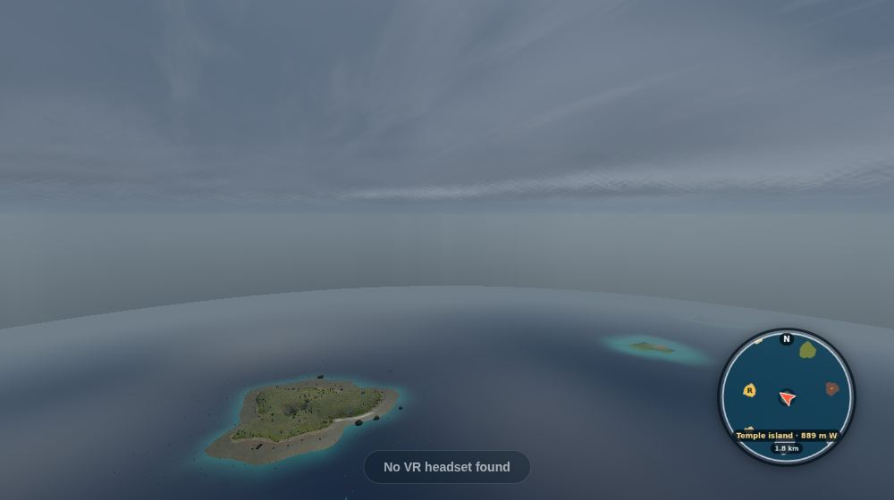
600 m. The horizon bends away; the detailed sea melts into the planet's own.
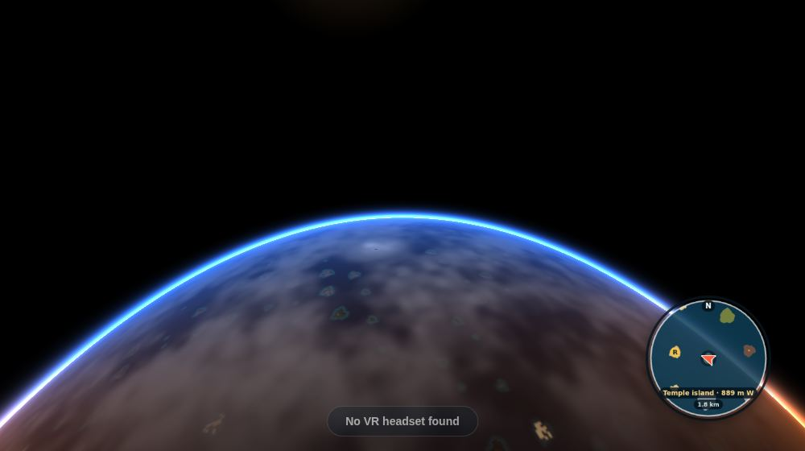
The terminator. A real day side and night side, with the sunset colours along the edge.
The sun stands still; the planet turns
The sun is fixed in space. The planet turns once a day under it, and you are on it, so your sunrise and sunset come from where you stand: fly east and the day gets later. The Time buttons set the time of day where you are. The moon circles the planet about every eight and a half days, lit by the same sun, so its phases are just where it is relative to the sun, and you can see them from the ground and from space.
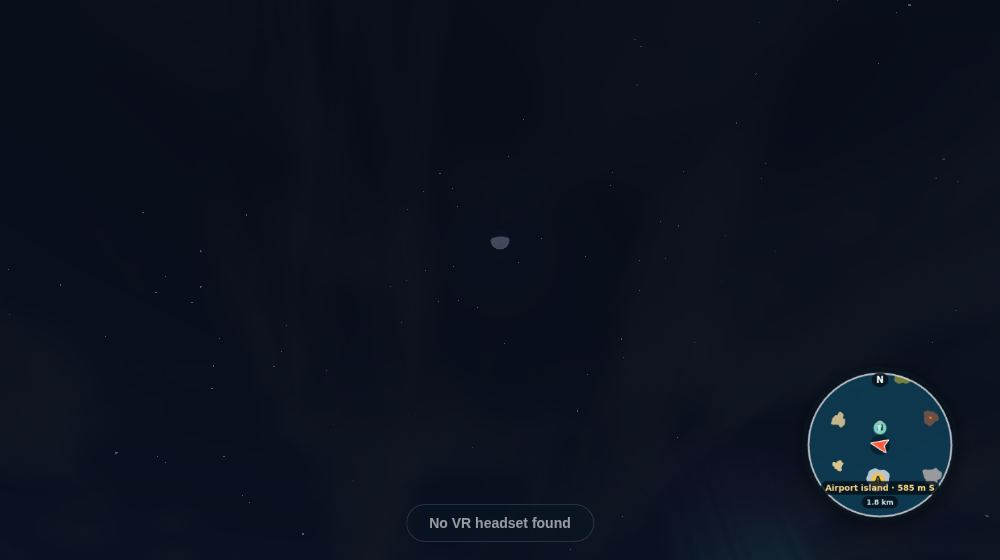
The moon, drawn as a lit ball, here a waning crescent.
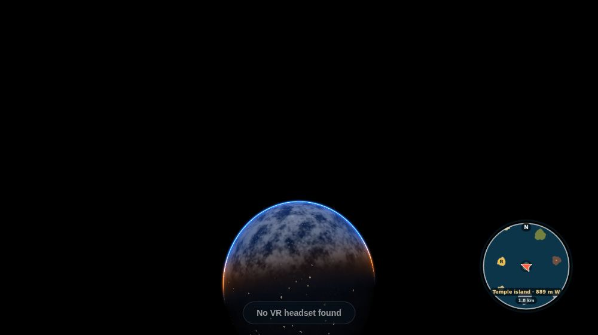
70 km up. The whole globe. Fly with the trigger at up to 7 km per second and the sky is black by 1.6 km.
Lakes
Some of the bigger islands now have a lake, cut into the land below the waterline, with its own water so it holds at any distance.
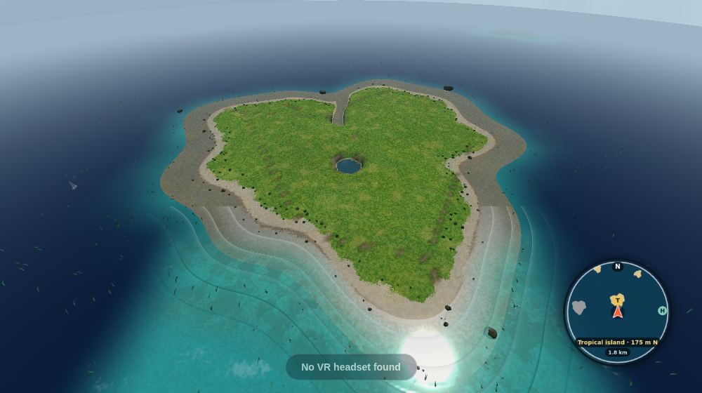
A lake inland on a tropical island.
Other worlds
Since 7.1 you can fly to them, and land.
In space you have a true position, and your speed grows with your height above the nearest world, so a crossing takes seconds and an arrival is gentle (the flight-speed setting chooses how fast, up to 2,000 km/s). The Moon, the red world, the ice world and a ringed gas giant sit at their real places and sizes. Come within 6 km of one you can land on and the ground is built round you, in four tile sizes, from a height function of the place on the world, so a given spot is always the same land. The gas giant has no ground: you can circle it, and that is all. Each world has its own sky, light, fog and gravity, and the home planet hangs in the sky as a sphere.
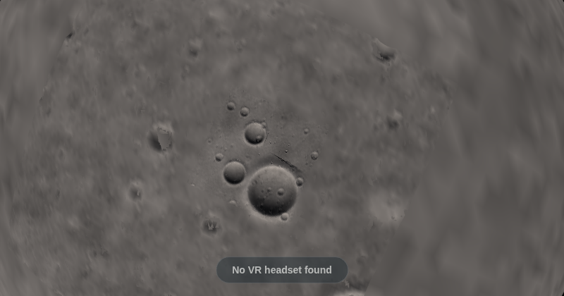
The Moon. Craters of every size, from basins to pits, in low gravity.
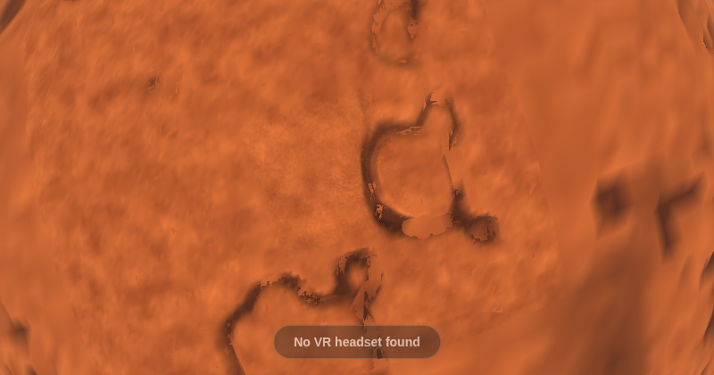
The red world. Rust desert, mesas and winding canyons under a pink sky.
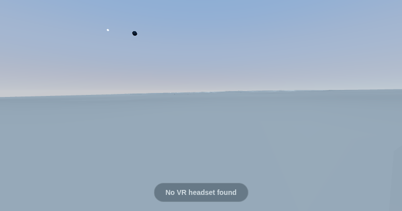
The ice world. Glaciers and crevasses under a pale blue sky.
Controls
VR on Quest, or keyboard and mouse on a screen.
Move
Left stick (VR), W A S D
Turn
Right stick (smooth), drag the mouse
Run
Click the left stick, hold Shift
Jump
A / Space
Fly
Jump, then hold a trigger and point (hold Space on a screen)
Swim
Stick, or hold the triggers and sweep your arms
Pick up / put down
Grip near it, E
Use something
Trigger with a hand close to it, E
Boat
Y to board or leave; left stick drives
Menu
X (left controller) / X
Minimap size
Menu, M
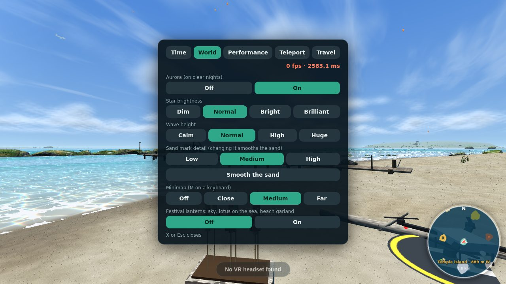
The menu. Time and weather, world options (aurora, stars, waves, sand detail, festival lanterns), performance, teleport to any kind of place, and travel (flight and boat speed).
How we got here
One conversation, built a request at a time.
Lantern Tide began as a way to reuse the ocean from Coastline, your coastal exploration project, in a new VR experience. Every version below came from a message in the same running conversation with Claude Code, which wrote the code, ran it in a headless browser to check it, and committed it. Nothing here has been tried on a headset by the assistant; you have been the one testing on the Quest, and the fixes you asked for are part of the story.
1.0
“use my water physics from my game, and create a new vr experience with it”
A raft on Coastline's ocean: Gerstner waves, foam, caustics, sky, with floating lanterns as the game.
2.0
“remove the game mechanics and menus … let me start walking on the island beach … let me experience the whole day night cycle”
The raft became a beach. Festival lanterns, a procedural sand shader, wind-driven palms, a day that lasts eight minutes. Smooth turning replaced snap turning.
2.1
“i want my feet to make imprints in the sand, give me a stick … a small campfire … godrays … the lighthouse beam”
Footprints and drawing in the sand, a campfire that lights the beach, a conical lighthouse beam, god rays through the clouds, better materials for trees, rocks and the lighthouse, and a run mode.
3.0
“bring in more content from coastline … fish schools and corals, seaweed … the weather system … the boat parked on a small dock”
Coastline's reef, kelp, fish schools, random weather and fog, and the boat moored at a new dock behind a breakwater.
3.1 – 3.3
“give me pickable fireworks … the drone from coastline as a pickable controller … a game menu when i press X”
Fireworks you can light, a drone with a hand controller that has a live screen, a VR menu with a fps meter, and performance settings for the costly sky.
3.4 – 3.5
“the clouds look grainy dithered … the sunset is overly dramatic”
Clouds and god rays are drawn into a small cached map of the sky and blurred, which removed the grain and made them cheap. Sunsets turned orange.
3.6 – 3.8
“add more controls … make that look like it's dug in the sand … better rocks … let me jump on the rocks, and swim some more”
A tabbed menu, dug-in sand marks, layered rock material, jumping onto rocks, swimming with underwater visuals and sound, arm-stroke swimming, and floating with just your head out.
3.9 – 3.12
“menu in my local view space … a teleport menu … flight, vrchat style … the code to control the boat from coastline”
Menu that follows you, teleport tab, flight, and driving the boat with Y.
4.0
“i want to expand the world a lot, generate random islands and points of interest … in chunks … make the world curve”
The streamed island world, volcano, temple, swamp and city islands, three hand-made places, a minimap, and a planned structure for adding more places (see WORLD_DESIGN.md).
4.1 – 4.2
“add more things from coastline: the ships, the airplanes, the birds, the oil rigs and windmills … roads and cars … farming fields … cliffs”
Ships, an oil rig, wind turbines, gulls, planes and an airport island, roads with power lines and cars, farmland and sea cliffs. Buildings were fixed to be solid, and roads were settled onto the landscape.
5.0
“make the entire world a sphere like a planet … fly up to space … the sky fade from blue to black slowly”
The world became a planet: a curve applied to everything, a ray-traced sphere standing in for the far sea, a baked map of the islands for the view from space, an atmosphere, sun, moon, stars and neighbours. Flight became much faster.
5.1 – 6.2
“fix the exposure, everything looks blown out white … the lanterns and lotus should be off by default … four more places: lighthouse, shipwreck, observatory, ruins … a world without edges”
A white-out that only some graphics cards showed was found by bisecting with switches: the curved-world patch applied to sprites broke Direct3D 11 on NVIDIA cards, so sprites are no longer bent. The review pass added four authored places, discovery messages, richer terrain and vegetation, a calmer minimap, safer diving, and a sky that goes black sooner.
7.1
“make me much faster when I'm in space and let me fly to other planets … full scale terrain … the red one like mars, the ring one a gas giant, the moon grey with craters”
Space got a true position and a speed that grows with height, four other worlds at real sizes, tiled ground for the three you can land on, and a fix for a bug where plain materials were curved round the wrong point far from the origin.
7.0
“I want this to be a real sphere … the sun shouldn't move, the planet itself should rotate and I'm on it”
The world became a cube-sphere of six faces joined at the edges, with one planet size at every height, a map of the whole planet baked from the same functions that stream the islands, lakes, a spinning planet under a fixed sun, and a moon with phases.
A note on what was tested. Everything was checked in a headless desktop browser with software rendering, at about one frame per second, using scripted visits and screenshots. Frame rate on a real Quest 3 is untested, and the scene is heavy (the sea is drawn twice, and the base reef and sky were already costly). If it stutters, the Performance tab is the first place to look. The screenshots on this page were captured the same way.
Under the hood
The ideas that made it work in a single file.
One formula, two languages
Wave heights, shoreline shape and island height are written once in JavaScript and once in GLSL, kept identical, so physics, boats and the water shader agree.
Deterministic worlds
A cell's hash decides its island, so revisiting a place can never change it. The shaders get the nine cells round the camera as uniforms, and need no geometry to know where land is.
A budget for building
Islands are built in generators that run for a few milliseconds a frame, nearest first: coarse land, cheap instanced trees, then detail as you approach. Places of interest have three levels: a name, a simple silhouette, and a full scene with props, lights and things to use.
A curved world, and a round one
One line in three.js's shared vertex-projection chunk drops every vertex by distance squared, so every material bends with the world. The far sea is a sphere traced in a shader with the same curvature, and a map of all the islands, baked in the background from the same height formula, paints it from space.
Smooth skies
Clouds and god rays are marched into a small map of the whole sky, a quarter of it per frame, then blurred when read back. That is what removed the grain and made it affordable.